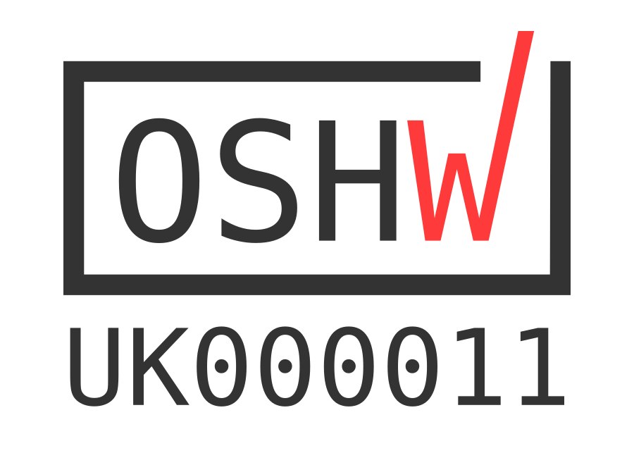

Credits & Licensing Information:¶
{kind=link}
This kit is certified open source hardware - certification.oshwa.org/uk000011.html
The name - OTIS by Martin Parker (martinparkers.com)
Boards, schematics, all other diagrams, these instructions and anything else not listed by Matthew Charlston (twitter) and James Cook (jaminit.co.uk)
Various other things - Claire Garside (clairegarside.com)
Lastly, a huge thanks to the entire Leeds Raspberry Jam (find details of jams at tinyurl.com/LeedsJams) community for making OTIS possible.
Documentation:¶

OTIS Documentation (includes all content on this subdomain EXCLUDING files on the diagrams page) by Leeds Raspberry Jam is licensed under a Creative Commons Attribution-ShareAlike 4.0 International License.
Hardware:¶
© Copyright 2020 Matthew Charlston / Leeds Raspberry Jam
This source (covers content found on the Diagrams page and all other manufacturing information) describes Open Hardware and is licensed under the CERN-OHL-S v2.
You may redistribute and modify this documentation and make products using it under the terms of the CERN-OHL-S v2 (https:/cern.ch/cern-ohl). This documentation is distributed WITHOUT ANY EXPRESS OR IMPLIED WARRANTY, INCLUDING OF MERCHANTABILITY, SATISFACTORY QUALITY AND FITNESS FOR A PARTICULAR PURPOSE. Please see the CERN-OHL-S v2 for applicable conditions.
Source location - this website (more specifically on the Diagrams page)
As per CERN-OHL-S v2 section 4, should You produce hardware based on these sources, You must maintain the Source Location visible on the circuit board design and any accompanying material you make using this documentation.